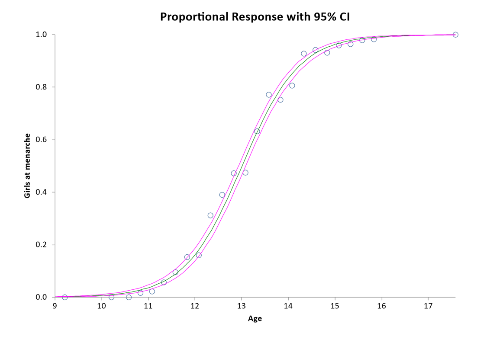

Probit Analysis
Menu location: Analysis_Regression and Correlation_Probit Analysis.
This function provides probit analysis for fitting probit and logit sigmoid dose/stimulus response curves and for calculating confidence intervals for dose-response quantiles such as ED50.
When biological responses are plotted against their causal stimuli (or logarithms of them) they often form a sigmoid curve. Sigmoid relationships can be linearized by transformations such as logit, probit and angular. For most systems the probit (normal sigmoid) and logit (logistic sigmoid) give the most closely fitting result. Logistic methods are useful in Epidemiology because odds ratios can be determined easily from differences between fitted logits (see logistic regression). In biological assay work, however, probit analysis is preferred (Finney, 1971, 1978). Curves produced by these methods are very similar, with maximum variation occurring within 10% of the upper and lower asymptotes.
Probit
$\displaystyle Y'=\Phi^{-1}(p)$
- where Y' is the probit transformed value (5 used to be added to avoid negative values in hand calculation), p is the proportion (p = responders/total number) and inverse Φ(p) is the 100*p% quantile from the standard normal distribution.
Logit
Odds = p/(1-p)
[p = proportional response, i.e. r out of n responded so p = r/n]
Logit = log(p/(1-p)) / 2, half the log odds: Finney's (1971) definition, which puts the logit on nearly the same scale as the probit. The constant and slope of the logit model are reported on this scale, so they are half of those for the log odds itself.
Data preparation
Your data are entered as dose levels, number of subjects tested at each dose level and number responding at each dose level. At the time of running the analysis you may enter a control result for the number of subjects responding in the absence of dose/stimulus; this provides a global adjustment for natural mortality/responsiveness. You may also specify automatic log transformation of the dose levels at run time if appropriate (this should be supported by good evidence of a log-probit relationship for your type of study).
Model analysis and critical quantiles
The fitted model is assessed by statistics for heterogeneity which follow a chi-square distribution. If the heterogeneity statistics are significant then your observed values deviate from the fitted curve too much for reliable inference to be made (Finney, 1971, 1978).
StatsDirect gives you the effective/lethal levels of dose/stimulus with confidence intervals at the quantiles you specify, e.g. ED50/LD50.
Technical validation
The curve is fitted by maximum likelihood estimation, using Newton-Raphson iteration. A dummy variable is used to factor in the background/natural response rate if the you specify a response in controls.
Further analysis and cautions
For more complex probit analysis, such as the calculation of relative potencies from several related dose response curves, consider non-linear optimisation software or specialist dose-response analysis software such as Bliss. The latter is a FORTRAN routine written by David Finney and Ian Craigie, it is available from Edinburgh University Computing Centre. MLP, Genstat or R can be used for more general non-linear model fitting with the ability to constrain curves to "parallelism". Expert statistical guidance should be sought before attempting this sort of work.
CAUTION 1: Please do not think of probit analysis as a "cure all" for dose response curves. Many log dose - response relationships are clearly not Gaussian sigmoids. Other well described sigmoid relationships include angular, Wilson-Worcester and Cauchy-Urban. There may be no "off the shelf" regression model suited to your study. Exploratory non-linear modelling should only be carried out by an expert Statistician.
CAUTION 2: Standard probit analysis is designed to handle only quantal responses with binomial error distributions. Quantal data, such as the number of subjects responding vs. total number of subjects tested, usually have binomial error distributions. You should not use continuous data, such as percent maximal response, with probit analysis as these data are likely to require regression methods that assume a different error distribution. Most researchers should seek expert statistical help before pursuing this type of analysis (see non-linear models).
Example
From Finney (1971, p. 98).
Test workbook (Regression worksheet: Age, Girls, + Menses).
The following data represent a study of the age at menarche (first menstruation) of 3918 Warsaw girls. For each age group you are given mean age, total number of girls and the number of girls who had reached menarche.
| Age | Girls | + Menses |
| 9.21 | 376 | 0 |
| 10.21 | 200 | 0 |
| 10.58 | 93 | 0 |
| 10.83 | 120 | 2 |
| 11.08 | 90 | 2 |
| 11.33 | 88 | 5 |
| 11.58 | 105 | 10 |
| 11.83 | 111 | 17 |
| 12.08 | 100 | 16 |
| 12.33 | 93 | 29 |
| 12.58 | 100 | 39 |
| 12.83 | 108 | 51 |
| 13.08 | 99 | 47 |
| 13.33 | 106 | 67 |
| 13.58 | 105 | 81 |
| 13.83 | 117 | 88 |
| 14.08 | 98 | 79 |
| 14.33 | 97 | 90 |
| 14.58 | 120 | 113 |
| 14.83 | 102 | 95 |
| 15.08 | 122 | 117 |
| 15.33 | 111 | 107 |
| 15.58 | 94 | 92 |
| 15.83 | 114 | 112 |
| 17.58 | 1049 | 1049 |
To analyse these data in StatsDirect you must first prepare them in three workbook columns appropriately labelled. Alternatively, open the test workbook using the file open function of the file menu. Then select Logit from the Probit analysis section of the Regression and Correlation section of the analysis menu. Select the column marked "Age" when you are prompted for dose levels, select "Girls" when you are prompted for subjects at each level and select "Menses" when prompted for responders at each level. Make sure that the "Calc log10" option is not checked when prompted, this disables base 10 logarithmic transformation of the "dose" variable (mean ages in this example). Enter number of controls as 0 when prompted and also enter 0 when you are asked about an additional quantile.
For this example:
Probit analysis - logit sigmoid curve
constant = -10.613197
slope = 0.815984
Median * Dose = 13.006622
Confidence interval (No Heterogeneity) = 12.930535 to 13.082483
* Dose for centile 90 = 14.352986
Confidence interval (No Heterogeneity) = 14.238636 to 14.480677
Chi² (heterogeneity of deviations from model) = 21.869854, (23 df), P = .5281
t for slope = 27.682451 (23 df) P < .0001

Having looked at a plot of this model and accepted that the model is reasonable, we conclude with 95% confidence that the true population value for median age at menarche in Warsaw lay between 12.93 and 13.08 years when this study was carried out.
 R code
R code
This R code reproduces the example above. It needs no packages and was checked with R 4.6.1. Paste it into R, or save it as a script and run it.
# Probit analysis, logit model: the StatsDirect help example (Finney 1971, age at
# menarche of 3918 Warsaw girls) in R
age <- c(9.21, 10.21, 10.58, 10.83, 11.08, 11.33, 11.58, 11.83, 12.08, 12.33, 12.58,
12.83, 13.08, 13.33, 13.58, 13.83, 14.08, 14.33, 14.58, 14.83, 15.08, 15.33,
15.58, 15.83, 17.58)
girls <- c(376, 200, 93, 120, 90, 88, 105, 111, 100, 93, 100, 108, 99, 106, 105, 117,
98, 97, 120, 102, 122, 111, 94, 114, 1049)
menses <- c(0, 0, 0, 2, 2, 5, 10, 17, 16, 29, 39, 51, 47, 67, 81, 88, 79, 90, 113, 95,
117, 107, 92, 112, 1049)
# R's standard model for a proportion responding at each dose level: a binomial
# regression with the logit link (the doses are ages here, not logged)
fit <- glm(cbind(menses, girls - menses) ~ age, family = binomial)
# One more iteration from the converged coefficients leaves them unchanged and
# gives the standard errors from the final weights, as the report computes them
fit <- glm(cbind(menses, girls - menses) ~ age, family = binomial, start = coef(fit))
print(summary(fit))
# The report's lines to 6 places
six <- function(x) formatC(x, digits = 6, format = "f", drop0trailing = TRUE)
pv <- function(p) {
if (p < 0.0001) "P < 0.0001" else
paste("P =", formatC(p, digits = 4, format = "f", drop0trailing = TRUE))
}
a <- coef(fit)[1]
b <- coef(fit)[2]
v <- vcov(fit)
# StatsDirect follows Finney in taking the logit as half the log odds, so that its
# scale is close to the probit's: its constant and slope are half of R's
cat("constant =", six(a / 2), "\n")
cat("slope =", six(b / 2), "\n")
# The dose for a given proportion p is (logit(p) - a) / b; its confidence interval
# without heterogeneity is Fieller's, from the variances and covariance of a and b
dose_for <- function(p) (qlogis(p) - a) / b
fieller <- function(p, conf = 0.95) {
m <- dose_for(p)
z <- qnorm((1 + conf) / 2)
g <- z^2 * v[2, 2] / b^2
vm <- v[1, 1] + 2 * m * v[1, 2] + m^2 * v[2, 2]
half <- z / abs(b) * sqrt(vm - g * (v[1, 1] - v[1, 2]^2 / v[2, 2]))
centre <- m + g * (m + v[1, 2] / v[2, 2]) / (1 - g)
c(centre - half / (1 - g), centre + half / (1 - g))
}
cat("Median * Dose =", six(dose_for(0.5)), "\n")
cat("Confidence interval (No Heterogeneity) =", six(fieller(0.5)[1]), "to",
six(fieller(0.5)[2]), "\n")
cat("* Dose for centile 90 =", six(dose_for(0.9)), "\n")
cat("Confidence interval (No Heterogeneity) =", six(fieller(0.9)[1]), "to",
six(fieller(0.9)[2]), "\n")
# Heterogeneity of the observed proportions about the fitted curve: Pearson's
# chi-square with n - 2 degrees of freedom; the test of the slope is b over its
# standard error
chi <- sum(residuals(fit, type = "pearson")^2)
cat("Chi2 (heterogeneity of deviations from model) =", six(chi),
paste0("(", fit$df.residual, " df)"),
pv(pchisq(chi, fit$df.residual, lower.tail = FALSE)), "\n")
t_slope <- b / sqrt(v[2, 2])
cat("t for slope =", six(t_slope), paste0("(", fit$df.residual, " df)"),
pv(2 * pt(-abs(t_slope), fit$df.residual)), "\n")